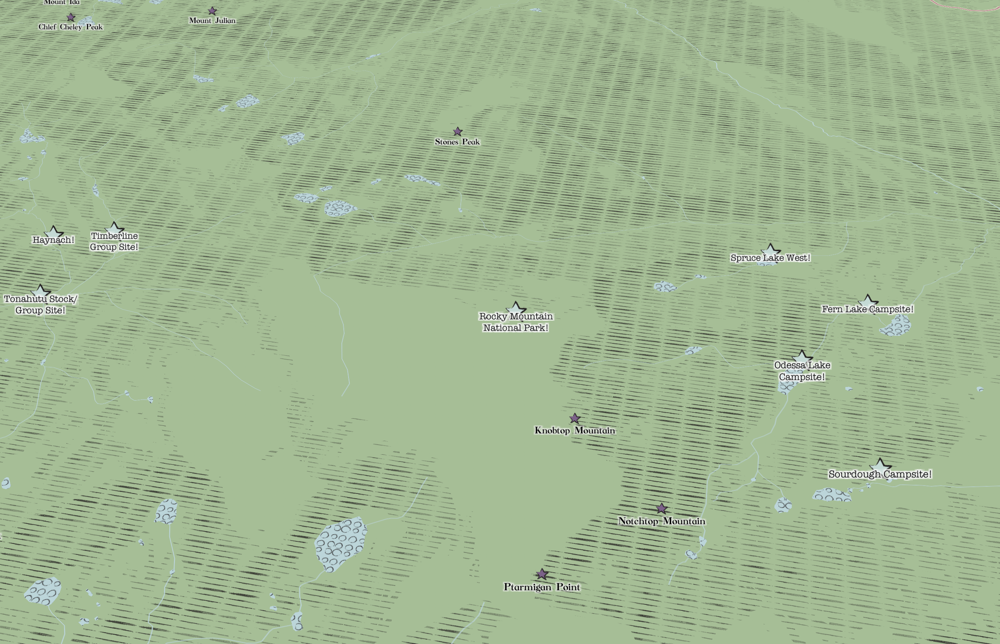
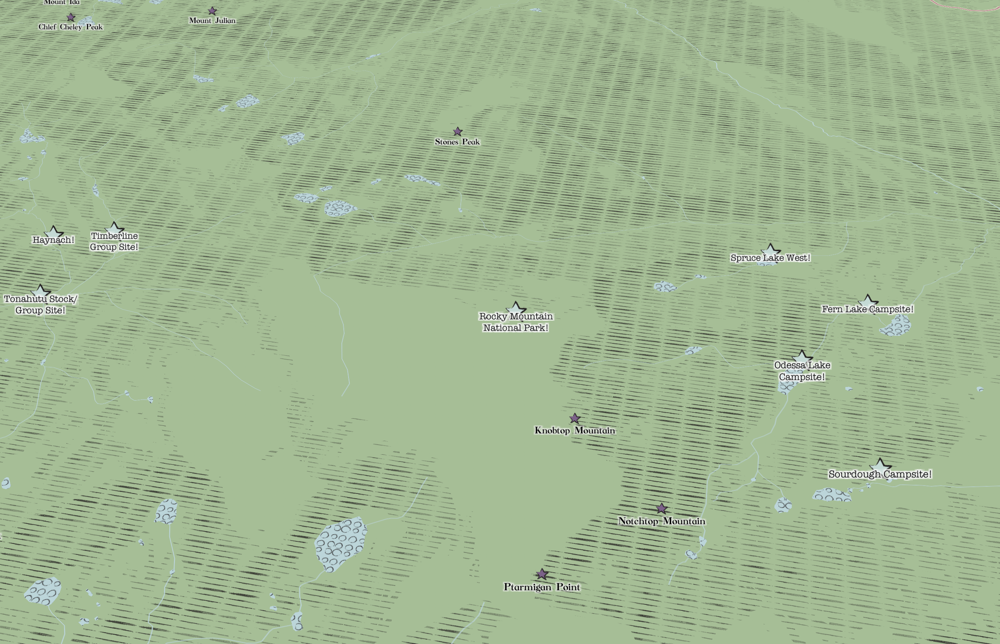

The Pigeon is on a Map!
My style is called The Pigeon is on a Map! and is based on the style of the children's author and illustrator Mo Willems.
I drew inspiration from a few of my favorite characters from the Mo Willems universe.
I used some of the patterns, text, and colors from these photos as inspiration for my map.
In the map, pigeons represent big cities and capitals, and light yellow speech bubbles are highways and roads.


When zoomed in, certain points of interest can be specified by different icons. Stars represent public areas related to general, park, education, and medical areas. Purple dots represent places within the food and drink category. The pink speech bubble represent arts and entertainment, sports and leisure, and historic landmarks.


 
